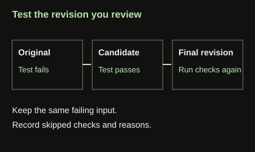

From defect to release
Take a one-cent error through specification, verification, rollout and recovery.
On this page
Turn a one-cent error into a contract
A subtotal of 200 cents incurs 16.5 cents of tax in the example service. The contract says to round up at half a cent. The previous implementation returns 216 cents. An implementer who sees only “fix rounding” can change existing callers or apply the discount after tax.
Write the observable behavior first. In this service, a 300-cent basket with a 100-cent discount must total 217 cents. A discount larger than the subtotal must yield zero. Negative or fractional discounts must fail validation. The original one-argument call must continue to work. Inspect the tests and implementation.
| Stage | Artifact to request | What a person decides |
|---|---|---|
| Problem and specification | One failing example, one preserved behavior, a written rule | Whether the rounding rule and discount order match the intended product |
| Architecture | Compare rounding in the caller with rounding in the service | Where every supported entry point can share the rule |
| Implementation | A small diff, typed boundary checks and exact arithmetic | Whether any public caller changes |
| Verification | Failing test before the fix, passing test after it, regressions on both | Whether the test distinguishes correct behavior from a convenient shortcut |
| Release | Revision, rollout owner, signal and rollback trigger | Whether any external release should proceed |
| Operation | Errors by revision, reconciliation differences and incident notes | Whether to pause, revert or repair the data |
Give the worker a path through the repository
Start from the failing call. Trace the entry point, its caller, tests, config and output. Read the instructions that apply to those paths. Keep a compact map and retain the revision. OpenAI describes this repository-map approach in its own engineering work. [E01]
Read labs/service/test_service.py and the two service modules.
Return the public function signature, rounding contract and smallest failing input.
Preserve the single-argument call. Show where an optional discount belongs.
Stop after you identify the test that distinguishes the two implementations.A skill supplies a reusable procedure. A hook can run at a configured event. A plugin packages capabilities. An MCP server exposes operations or resources through a protocol. For the invoice repair, a local test already answers the question. Add a tool only if an acceptance check requires information you cannot otherwise inspect. See the resource catalog for product-specific support and limits.
Split work only when artifacts can meet again
An implementer can own the service while a reviewer prepares boundary cases in a separate checkout. If both edit the tax rule, the main bottleneck becomes integration. Agree on the function contract and file ownership before delegation. Do not hand the implementer hidden evaluation labels.
git worktree add -b experiment/service ../service-tree HEAD
git worktree listThese commands ran in a temporary repository with Git 2.56.0. They produced two working directories at the same starting commit. Run them from a Git repository with a fresh branch name and an unused sibling path. Inspect the branch and directory if creation fails. Keep separate temp directories, database names and test ports. Linked worktrees share repository history. [E06]
Compare the worker's patch with its base. Reconcile overlapping files by intent. Run checks again on the combined revision. Two green branches can still fail together. Anthropic's compiler experiment illustrates a setting with unusually rich external tests. Its author also reports a project bill just under $20,000. That figure describes the experiment and provides no budget estimate for this service. [E12]
Choose checks that can disprove the change
- Run the original input through the public API. Save the wrong total.
- Run the same input on the candidate. Save the returned total.
- Test a large integer and a half-cent boundary. Check an existing caller.
- Review dependencies and tool permissions. Keep credentials outside fixtures and prompts.
- Use the repository's configured type checker and static checks when available. Record each skipped check with its reason.
- For an interface, use the keyboard and inspect the saved application state after refresh. A screenshot alone cannot verify persistence.
- Have a reviewer inspect the diff, current revision, test output and missing cases.
Browser interaction can reveal a control that looks correct but calls the wrong handler. Anthropic reports that independent UI interaction caught failures after self-evaluation. Treat a reviewer model's textual verdict as a lead until its example reproduces. [E10]


Release the same revision you tested
Suppose the service later handles real transactions. These are design steps for a future release. The lab runs only on synthetic amounts.


| Boundary | Example procedure |
|---|---|
| Before CI | Pin the source revision and dependency set. Inspect changes to manifests and build scripts. Run unit and integration checks in a clean environment. |
| Before rollout | Record the prior deployable version. Compare sampled invoice totals in shadow mode without a second charge. Use synthetic IDs in logs. |
| During rollout | Compare a small new-version population with comparable control traffic. Monitor total mismatches, failures, volume and latency. The release owner defines thresholds and a minimum observation window. |
| On an error | Pause traffic to the candidate. Retain inputs and revisions. Review previously issued invoices separately because a code rollback cannot reverse issued records. |
| After recovery | Keep the smallest failing input as a regression. Assign an owner to each unresolved data correction. |
Google's SRE workbook describes canary evaluation and the importance of comparison signals. Release thresholds in this example require local product judgment. [E07]
Measure accepted work
Pick two comparable groups of tasks. Define acceptance before assignment. Track time from issue start through review, escaped defects, review minutes, model charges and stalled tasks. Randomize assistance where practical. Keep both accepted and rejected attempts in the denominator.
METR's early-2025 study measured a 19% increase in completion time for its participants with AI tools available. Its later study described selection effects and difficulty measuring concurrent work. Neither result tells you how much time your next invoice change will take. [E04] [E05]
Practice. Complete the release note with the original and corrected totals. Then write an independent boundary test. From memory, explain why two green branches can fail after merge. Transfer your test design to coupon expiry. Tomorrow, reproduce the original defect before you reopen the solution.